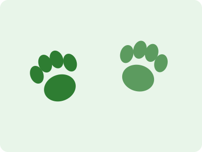

O Mundo Animal é um site desenvolvido como projeto da disciplina de Front-End Web. Ele reúne curiosidades sobre animais de diferentes ambientes e dicas de cuidados com animais de estimação.
O objetivo é aplicar HTML5 semântico, CSS3, JavaScript e Bootstrap na construção de um site responsivo, organizado e acessível.